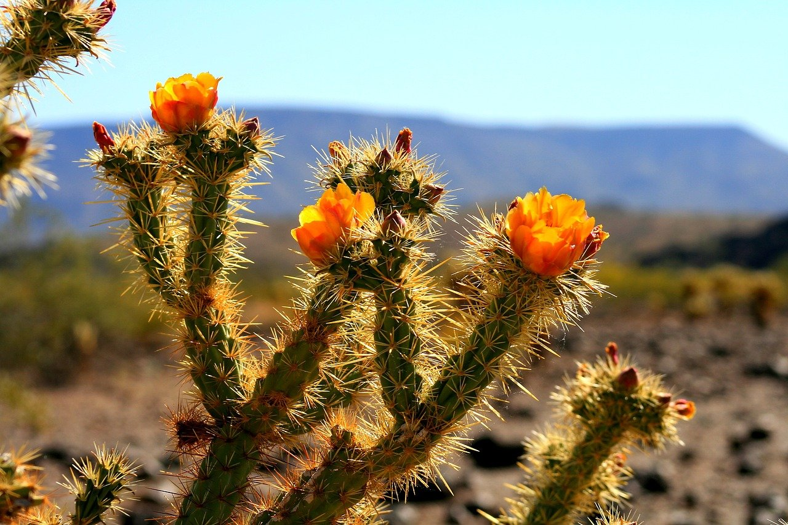

Ученые считают, что родиной кактуса является Южная Америка и острова Карибского моря, раньше носившие название Вест-Индия. Там он возник более 30 млн лет назад в виде мезофитного двудольного цветка. К моменту зарождения древних мезоамериканских цивилизаций он изменил экстерьер на более устойчивый к жаркому климату.
Из ацтекских легенд, расшифрованных этнографами, известно, что опунция, именуемая коренными жителями «нопаль», применялась в быту, употреблялась в пищу и была объектом культа, символом милости богов. Растение изображено на современном гербе и флаге Мексики. По сей день на рынках этой страны плоды опунции, эхиноцереуса и пилосодереуса продаются в качестве уличной еды.
Кактусы — растения Нового Света, их естественный ареал — Южная Америка и Северная Америка, а также острова Вест-Индии. Вид Rhipsalis baccifera встречается, кроме Америки, также в Африке, на Мадагаскаре и Шри-Ланке, куда, как считают, он был занесён, возможно, человеком. Предполагался также занос семян перелётными птицами, но нет видов птиц, которые бы совершали подобные миграции. Человек занёс некоторые виды кактусов — в основном опунциевые — на все континенты, кроме Антарктиды. Вид Opuntia humifusa распространён по всему Средиземноморью и встречается на побережье Крыма, Черноморском побережье России, в районе городов Геленджик и Новороссийск, а также в Тбилиси, около ботанического сада. В урочище Кордон Астраханской области имеется популяция Opuntia phaeacantha, самая северная в России; одичавшие опунции в районе Севастополя и на Южном берегу Крыма обитают примерно на 3° южнее.